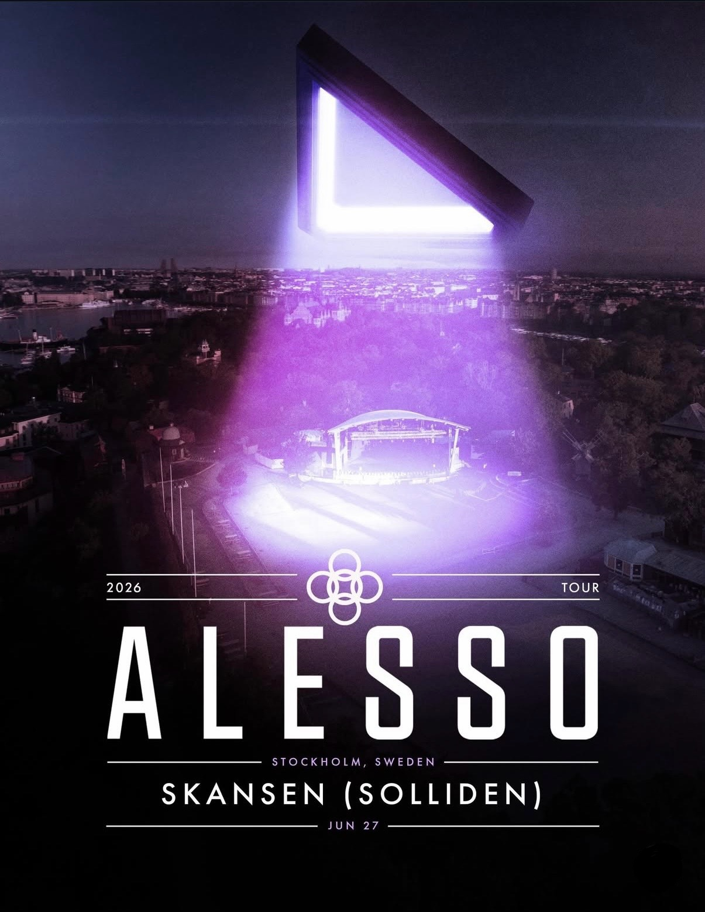

SWE Beats
Hem
Stad
Om oss
Kontakt
Event i Stockholm
Klicka på en artist för att läsa mer.

Alesso
Otto Knows
Event i Göteborg
Klicka på en artist för att läsa mer.
Nicky Romero
Swedish House Mafia
Tillbaka till startsidan